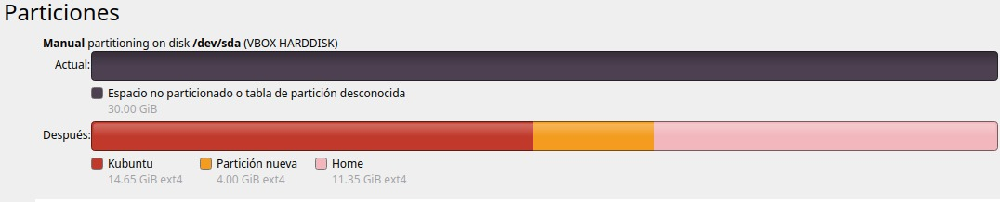

Actividad 1: Instalación de Sistemas Operativos (Kubuntu y Ubuntu Server)
El objetivo de esta actividad fue instalar y verificar la funcionalidad de dos sistemas operativos basados en Linux: **Kubuntu** con interfaz gráfica y **Ubuntu Server** solo línea de comandos. Esto demuestra la capacidad de configurar máquinas virtuales y manejar diferentes entornos operativos.
1.1 Instalación de Kubuntu (Entorno Gráfico)
Configuración de Particiones
La instalación de Kubuntu se realizó utilizando el software de virtualización Oracle VirtualBox. Se creó un esquema de particionamiento personalizado para asegurar una distribución organizada del sistema operativo, el área de intercambio y los datos de usuario.

Figura 1.1: Vista del particionamiento manual para Kubuntu, incluyendo particiones separadas para Raíz 15 GB, Swap 4 GB y Home 11 GB restantes.
Evidencia de Instalación
El sistema quedó con el entorno gráfico KDE funcional y listo para la instalación de los navegadores y editores requeridos en la siguiente actividad.
Figura 1.2: Entorno gráfico de Kubuntu funcionando y mostrando los editores y navegadores instalados.
1.2 Instalación de Ubuntu Server (Línea de Comandos)
Configuración de Particiones y Usuario
La instalación de Ubuntu Server se realizó sin una interfaz gráfica. El proceso fue asistido por texto, siguiendo la misma estructura de particionamiento de Raíz, Swap y Home. Se instaló el servidor OpenSSH para futura administración remota.
Raíz (/): 15 GB, Ext4.
Swap: 4 GB, Área de Intercambio.
Home (/home): 11 GB restantes, Ext4.
Figura 1.3: Resumen del particionamiento manual durante la instalación de Ubuntu Server.
Verificación de Conectividad
Una vez completada la instalación y reiniciado el servidor, se accedió al sistema con las credenciales creadas. La prueba final verificó la funcionalidad de red del nuevo sistema ejecutando el comando `ip a`.
# Comando de verificación de interfaz de red en Ubuntu Server
jinergjinercito:" ip a
# Se muestra la configuración de la interfaz lo (loopback)
# y enpes3 (red física), confirmando la conectividad.
# Salida obtenida:
1: 10: LOOPBACK,UP,LOWER_UP> mtu 65536...
2: enpes3: mtu 1500...
Entrega de Evidencias y Documentación
Video Demostrativo del Proceso Completo
Video que muestra el proceso de instalación de Kubuntu gráfico y Ubuntu Server consola, incluyendo el particionamiento manual y la verificación de red.
Documento con Capturas de Pantalla
Descarga el PDF con las capturas de pantalla de cada etapa de instalación y explicaciones detalladas: